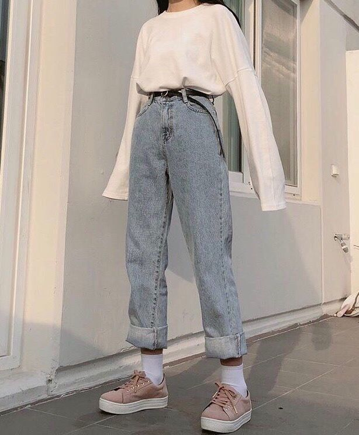
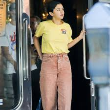
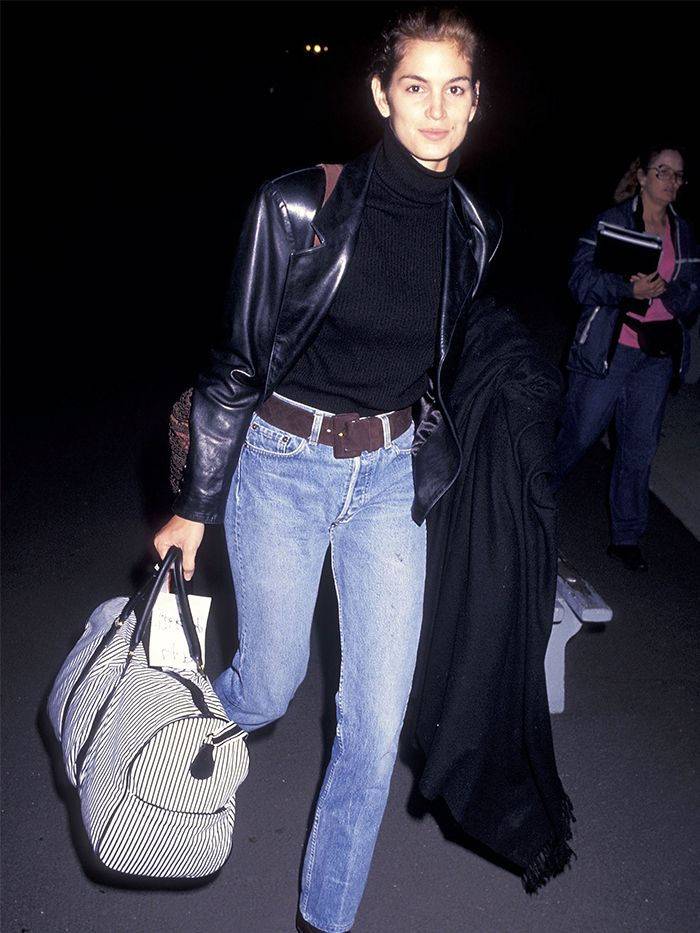

"Fashion in the 1990s was defined by a return to minimalist fashion, in
contrast to the more elaborate and flashy trends of the 1980s. One
notable shift was the mainstream adoption of tattoos, body piercings
aside from ear piercing and to a much lesser extent, other forms of body
modification such as branding.
Due to increased availability of the Internet and satellite television
outside the United States, plus the reduction of import tariffs under
NAFTA, fashion became more globalized6 and homogeneous in the late 1990s
and early 2000s.
In the early 1990s, several late 1980s fashions remained very stylish
among both sexes. However, the popularity of grunge and alternative rock
music helped bring the simple, unkempt grunge look to the mainstream by
1992" (
Wikipedia).
| Shoes |
Materials |
Outerwear |
| Platform Shoes |
Corduroy |
Sweater Vests |
| Converse |
Mesh |
Oversized Jackets |
| Doc Martens |
Velvet |
Leather Blazers |

"The anti-conformist approach to fashion led to the popularization of
the casual chic look that included T-shirts, jeans, hoodies, and
sneakers, a trend which continued into the 2000s" (
Wikipedia).
Additionally, fashion trends throughout the decade recycled styles from
previous decades, notably the 1950s, 1960s and 1970s.

